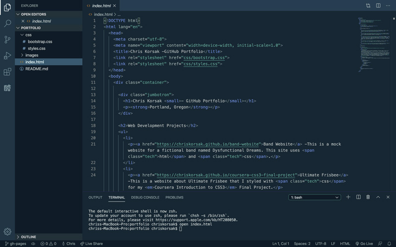

Chris Korsak - GitHub Portfolio
Portland, Oregon
Web Development Projects
-
Animal Shelter Homepage -This is website for a mock animal shelter using html, css, and bootstrap. Notably, this page also utilizes jquery to show and hide images, and to display text when an image is clicked.
-
Programming Language Selector -This is an online questionaire created using Javascript and jQuery.
-
Band Website -This is a mock website for a fictional band named Dysfunctional Dreams. This site uses html and css.
-
Ultimate Frisbee -This is a website about Ultimate Frisbee that I styled with css for my Coursera Introduction to CSS3 Final Project.
-
Dog Blog -This is a simple html only webpage, written from a dog's point of view.
-
Hiking tips website -This is an html only website dedicated to hiking tips.
About Me

Background
I'm currently a freelance commercial photographer in Portland, Oregon. I have a lot of experience with content creation for websites and apps, so web development seems like a natural progression for me.
I built my first website a decade ago for my former band. While this project started out as a "starving artist" task to avoid paying a professional to create a website, it turned into an honest interest of mine. Through the years, I've dabbled in creating simple websites, but now want to further my web development skills past the begining stages.
I'm currently taking an Introduction to Programming course at Epicodus, a coding school in Portland, Oregon.
Interests, Hobbies, and Skills
As much as I love computers, I have to balance it out with the following analog activies:
- Guitar
- Film Photography
- Exercise
- Strength Training
- Hiking
- Biking
- Cooking
- Spanish Language